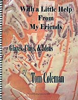
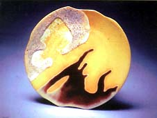
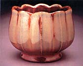
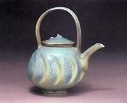
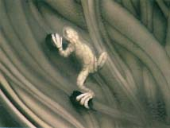

| With a Little Help From
My Friends
by Tom Coleman. Review by Steven Goldate.

The ceramics community is truly a wonderful one, where potters are
willing to share their experiences, techniques, recipes and production
'secrets', in the knowledge that while they are helping their colleagues
in a communal, spiritual sort of way, they can rest assured that
outright copying is rare and seldom rewarded.
In this spirit, Tom Coleman's manual With a Little Help From
My Friends, Glazes Clay and Ideas has a very apt title. In this
self-published edition, Tom shares with us 20 years of experience
and insights on clays, glazes, firing, kilns and more. There are
numerous recipes for porcelain and stoneware bodies of various kinds
from a pure white porcelain right through to a buff stoneware. There
are hints on firing gas and electric kilns and practical tips on
glazing with a bit of glaze philosophy thrown in for good measure.

The larger part of this manual is where the friends
step in. Tom has gathered together an impressive crew of potters,
who are also willing to share their knowledge with the public. They
include (in order of appearance) Mike Sherril of Hendersonville,
North Carolina, Craig Martell and Patrick Horsely, from Portland,
Oregon, Lance Hendrikson, Kurt Weiser of Tempe, Arizona, John Hopkins
from Grand Terrace, California, Elaine Coleman, Terry Charbonneau,
Jim Robinson of Phoenix, Oregon and Pete Pinnell from Lincoln, Nebraska,
who contributed a particularly large number of glaze recipes. There
is also a special chapter on Shino glazes, an area where Tom has
considerable expertise.
The
idea behind this manual is that the clay and glaze recipes offered
have been tried and tested many times over by studio potters with
considerable experience. These are recipes that should work, although
differences in locally available ingredients need to be factored
in. All in all, there must be hundreds of glaze recipes in this
manual, not to mention the clay and slip bodies.

With a total of 74 letter size pages, this is a medium sized manual,
but packed with plenty of information and color reproductions of
the artists pots. More attention could have been given to the index,
which is pretty minimal and I would have liked to know something
about the featured potters' backgrounds, so a short bio would have
been a good feature. I also think a glossary would be helpful, especially
in regards to some of the ingredients, which seem to be geared towards
US readers. I for one have never heard of 'Ione Grain 35 F'.
What are some of these lesser known ingredients and where can we
get them? Or if we can't get them, what might we substitute? Having
said that, recipes' molecular weights are given, for those who know
how to use glaze calculation software.

One last observation is that Tom could have paid a little more
attention to spelling and grammar. There are some inexcusable errors
in the text, although they shouldn't distract the enthusiast too
much from making good use of the information offered. Many years
of experience by a knowledgeable group of potter friends has gone
into this manual.
With a Little Help From My Friends can be obtained directly from
Tom and Elaine's web site, http://www.tomandelainecoleman.com.
More Book Reviews
More Articles
|
{kind=link}